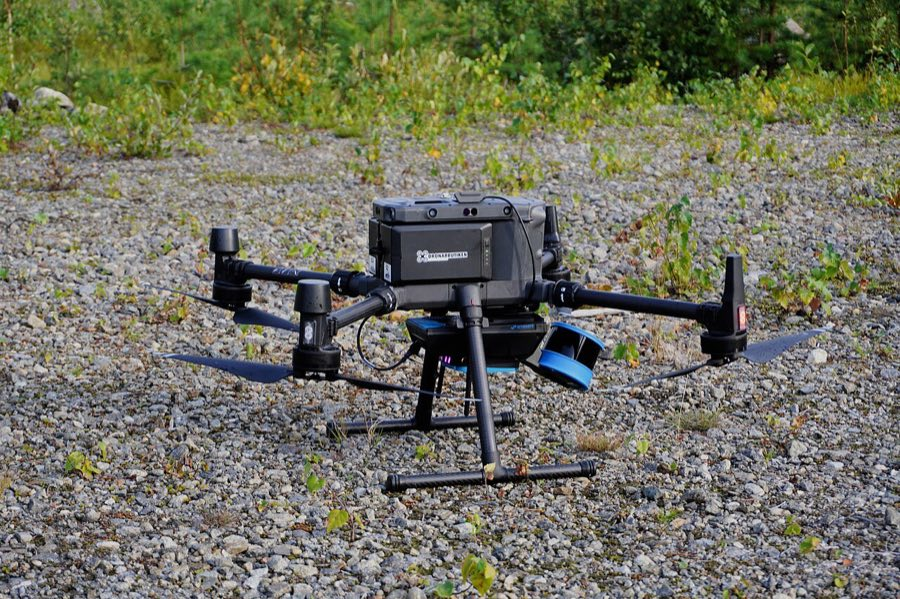
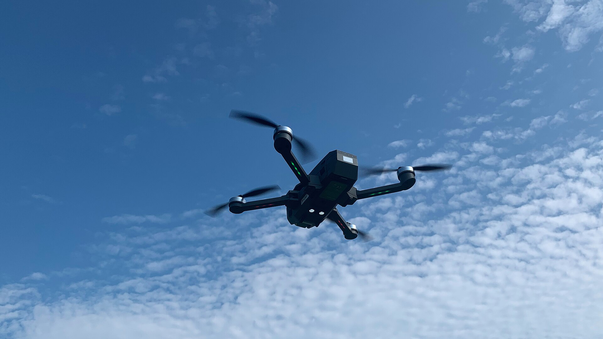
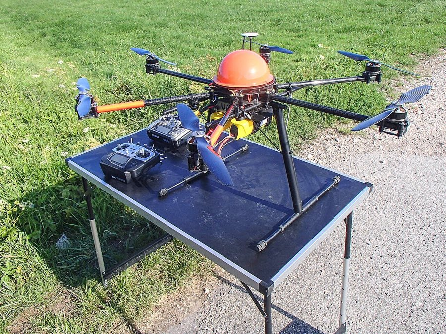
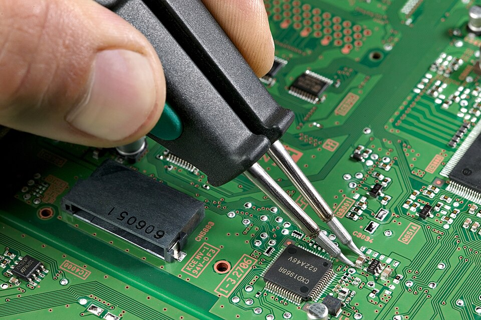
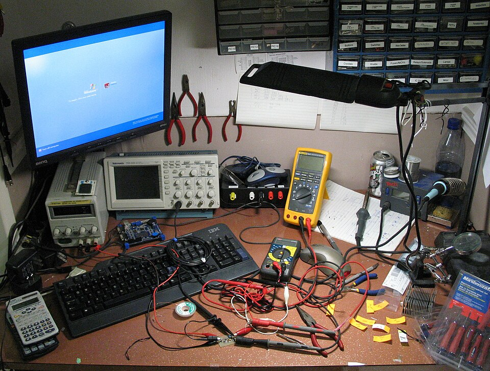
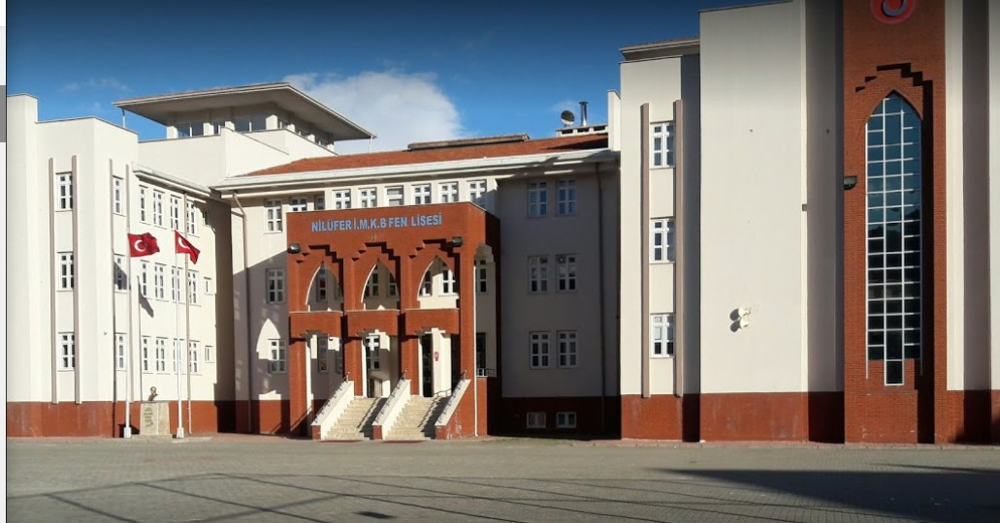
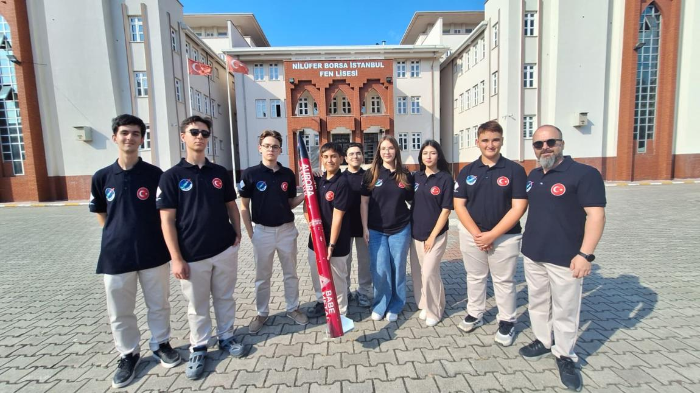
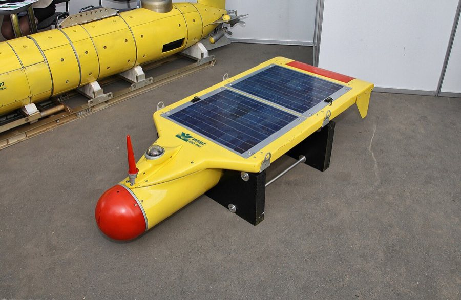
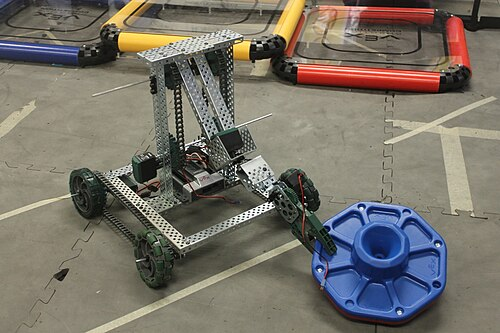
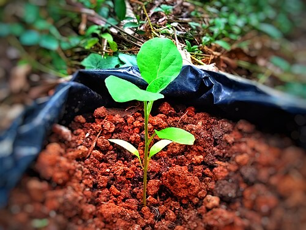

Havacılık Sistemleri
Gövde, kanat ve itki sistemini tasarlayıp üretiyor, aracı uçuşa hazırlıyoruz.

GökTürk, Nilüfer Borsa İstanbul Fen Lisesi öğrencilerinin 2026'da kurduğu insansız hava aracı takımı. Hedefimiz TEKNOFEST'te Türkiye birinciliği.


Gövde, kanat ve itki sistemini tasarlayıp üretiyor, aracı uçuşa hazırlıyoruz.

Uçuş kontrol kartını, sensörleri ve aracı otonom uçuracak yazılımı geliştiriyoruz.

Öğrendiklerimizi okulumuzda ve Bursa'da atölyelerle paylaşıyoruz.

İstikbal göklerdedir.
Mustafa Kemal Atatürk
Takımımızdaki herkesin ortak ilgisi havacılık. Uçan bir aracı tasarlamak, üretmek ve uçurmak bizi bir araya getirdi.
İHA, TEKNOFEST'te rekabeti en yüksek kategorilerden biri. Zor bir alanı bilerek seçtik; güçlü rakipler bizi daha iyi mühendis yapacak.
Takımımızın okulu, Bursa Nilüfer'de 2011–2012 eğitim yılında açılan, şehrin ikinci devlet fen lisesi. Öğrencilerini LGS ile alıyor.

Türkiye şampiyonu NIF Ar-Ge roket takımı, okulumuzun önünde roketiyle.


Aktif olarak çalışan takımımız su altı aracını tasarlıyor ve yarışmalara hazırlanıyor.

Öğrencilerimiz kendi robotlarını yapıp robot yarışmalarında okulumuzu temsil ediyor.

Okulumuzda çevre ve sürdürülebilirlik üzerine yürüttüğümüz uzun soluklu proje.